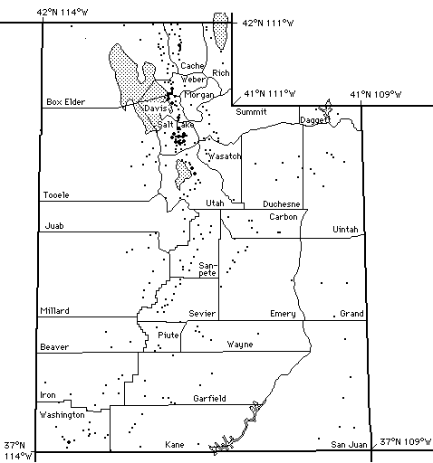

Utah Almanac A-C, Utah Almanac D-H, Utah Almanac I-M, Utah Almanac N-R, Utah Almanac S-U, Utah Almanac V-Z, Utah Almanac Roads (Other Utah References)
Choose a section above or click on a dot on the map for information about a place in Utah: 
By: Joseph F. Buchanan -Credits-